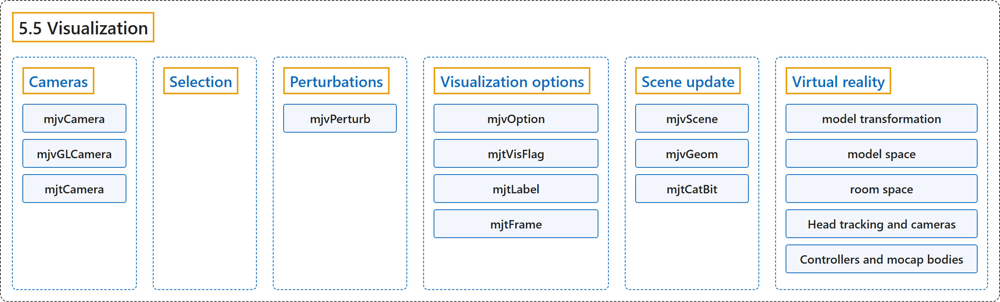

5.5 Visualization
Classification

Glossary
| Term | Definition | 中文翻译 | Source |
|---|---|---|---|
| 5.5 Visualization 可视化 |
(context) "MuJoCo has a native 3D visualization layer that is independent of any graphics library." | （语境）MuJoCo 有一个不依赖任何图形库的原生三维可视化层。 | Google DeepMind, n.d., "Visualization", para. 1 |
| Cameras 相机 |
"There are two types of camera objects: an abstract camera represented with the stand-alone data structure mjvCamera, and a low-level camera represented with the data structure mjvGLCamera (also aliased as mjrCamera) which is embedded in mjvScene or computed directly via mjv_camera2GLCamera." | 相机对象有两种类型：一种是用独立数据结构 mjvCamera 表示的抽象相机，另一种是用数据结构 mjvGLCamera（别名 mjrCamera）表示的底层相机，它嵌在 mjvScene 中，或直接通过 mjv_camera2GLCamera 计算得到。 | Google DeepMind, n.d., "Cameras", para. 1 |
| mjvCamera 抽象相机 mjvCamera |
"mjvCamera and mjvGLCamera represent high-level interactive cameras and low-level frustum cameras." | mjvCamera 和 mjvGLCamera 分别表示高层交互式相机和底层视锥相机。 | Google DeepMind, n.d., "Visualization", item 1 |
| mjvGLCamera 底层相机 mjvGLCamera |
"The low-level mjvGLCamera is what determines the actual rendering." | 底层的 mjvGLCamera 决定实际的渲染。 | Google DeepMind, n.d., "Cameras", para. 3 |
| mjtCamera 相机类型枚举 mjtCamera |
(context) "The abstract camera can represent three different camera types as determined by mjvCamera.type. The possible settings are defined by the enum mjtCamera:" | （语境）抽象相机可以表示三种不同的相机类型，由 mjvCamera.type 决定。可能的取值由枚举 mjtCamera 定义： | Google DeepMind, n.d., "Cameras", para. 2 |
| Selection 选取 |
"In many applications we need to click on a point and determine the 3D object to which this point/pixel belongs." | 在许多应用中，我们需要点击一个点，并确定这个点或像素所属的三维物体。 | Google DeepMind, n.d., "Selection", para. 1 |
| Perturbations 扰动 |
(context) "Interactive perturbations have proven very useful in exploring the model dynamics as well as probing closed-loop control systems." | （语境）交互式扰动已被证明在探索模型动力学以及检验闭环控制系统方面非常有用。 | Google DeepMind, n.d., "Perturbations", para. 1 |
| mjvPerturb 扰动结构体 mjvPerturb |
"All objects needed to implement interactive perturbations are grouped into the data structure mjvPerturb." | 实现交互式扰动所需的全部对象都归集在数据结构 mjvPerturb 中。 | Google DeepMind, n.d., "Perturbations", para. 2 |
| Visualization options 可视化选项 |
"The data structure mjvOption controls what is shown, independently of how it is rendered." | 数据结构 mjvOption 控制显示什么，而与如何渲染无关。 | Google DeepMind, n.d., "Visualization options", para. 1 |
| mjvOption 可视化选项结构体 mjvOption |
"mjvOption controls which element categories, geom groups, and diagnostic overlays are visible." | mjvOption 控制哪些元素类别、geom 分组和诊断叠加层可见。 | Google DeepMind, n.d., "Visualization", item 2 |
| mjtVisFlag 可视化标志枚举 mjtVisFlag |
(context) "flags, indexed by mjtVisFlag, enable the decorative and diagnostic elements: contact points and forces, joint and actuator axes, constraint violations, inertia boxes, convex hulls, skins, tendons, perturbation forces, and so on." | （语境）flags 由 mjtVisFlag 索引，用来启用装饰性和诊断性元素：接触点和接触力、关节轴和执行器轴、约束违背、惯性盒、凸包、蒙皮、肌腱、扰动力等。 | Google DeepMind, n.d., "Visualization options", item 1 |
| mjtLabel 标签枚举 mjtLabel |
(context) "label (mjtLabel) and frame (mjtFrame) select which category of objects is labeled with text and which spatial frames are drawn." | （语境）label（mjtLabel）和 frame（mjtFrame）选择哪一类对象加文字标签，以及绘制哪些空间坐标系。 | Google DeepMind, n.d., "Visualization options", item 3 |
| mjtFrame 坐标系枚举 mjtFrame |
(context) "label (mjtLabel) and frame (mjtFrame) select which category of objects is labeled with text and which spatial frames are drawn." | （语境）label（mjtLabel）和 frame（mjtFrame）选择哪一类对象加文字标签，以及绘制哪些空间坐标系。 | Google DeepMind, n.d., "Visualization options", item 3 |
| Scene update 场景更新 |
(context) "Finally, we bring all of the above elements together and explain how mjvScene is updated." | （语境）最后，我们把上述所有元素结合起来，说明如何更新 mjvScene。 | Google DeepMind, n.d., "Scene update", para. 1 |
| mjvScene 抽象场景 mjvScene |
"mjvScene and mjvGeom hold a complete per-frame geometric description of the 3D scene and its decorations." | mjvScene 和 mjvGeom 保存三维场景及其装饰的完整逐帧几何描述。 | Google DeepMind, n.d., "Visualization", item 4 |
| mjvGeom 抽象几何体 mjvGeom |
"Note that mjvGeom is an abstract geom, and is not in one-to-one correspondence with the simulation geoms in mjModel and mjData." | 注意 mjvGeom 是一个抽象 geom，它与 mjModel 和 mjData 中的仿真 geom 并非一一对应。 | Google DeepMind, n.d., "Scene update", para. 2 |
| mjtCatBit 类别位枚举 mjtCatBit |
(context) "Importantly, the user can select which geom categories will be added, via a bitmask of enum type mjtCatBit:" | （语境）重要的是，用户可以通过枚举类型 mjtCatBit 的位掩码选择添加哪些 geom 类别： | Google DeepMind, n.d., "Scene update", para. 4 |
| Virtual reality 虚拟现实 |
(context) "While MuJoCo does not provide a built-in VR application, it provides data structures and functions to support VR integration in user code." | （语境）虽然 MuJoCo 不提供内置的 VR 应用，但它提供在用户代码中支持 VR 集成的数据结构和函数。 | Google DeepMind, n.d., "Virtual reality", para. 3 |
| model transformation 模型变换 |
"If anything can be moved by the user (with a mouse or other input device) it is the position, orientation and scale of the model relative to the room. This is called model transformation, and is represented in mjvScene." | 如果有什么能被用户（用鼠标或其他输入设备）移动，那就是模型相对于房间的位置、朝向和缩放。这称为模型变换，在 mjvScene 中表示。 | Google DeepMind, n.d., "Virtual reality", para. 1 |
| model space 模型空间 |
"Everything accessible by the simulator lives in the model space." | 仿真器能访问的一切都位于模型空间中。 | Google DeepMind, n.d., "Virtual reality", para. 2 |
| room space 房间空间 |
"The room space is only accessible by the visualizer." | 房间空间只有可视化器能访问。 | Google DeepMind, n.d., "Virtual reality", para. 2 |
| Head tracking and cameras 头部跟踪与相机 |
"In a typical VR application, a tracking device provides the positions and orientations of the user’s eyes in real-time." | 在典型的 VR 应用中，跟踪设备实时提供用户双眼的位置和朝向。 | Google DeepMind, n.d., "Virtual reality", item 1 |
| Controllers and mocap bodies 控制器与动捕刚体 |
(context) "Hand-held spatial controllers are also tracked in room space." | （语境）手持空间控制器同样在房间空间中被跟踪。 | Google DeepMind, n.d., "Virtual reality", item 2 |
| mocap bodies 动捕刚体 |
"Mocap bodies are treated as fixed from the viewpoint of physics, yet the user is expected to move them programmatically at each simulation step." | 从物理的角度看，动捕刚体被视为固定的，但用户应在每个仿真步以编程方式移动它们。 | Google DeepMind, n.d., "Virtual reality", item 2 |
References
Google DeepMind. (n.d.). Visualization. MuJoCo Documentation (Version 3.17.0). Retrieved October 31, 2026, from https://mujoco.readthedocs.io/en/stable/programming/visualization.html